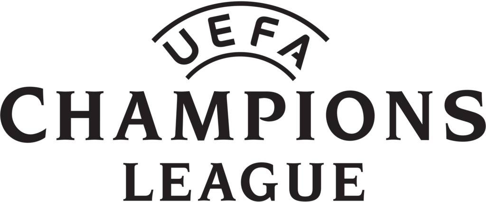
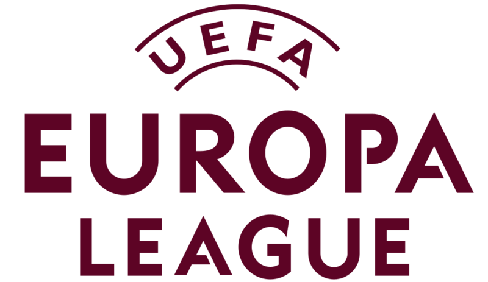
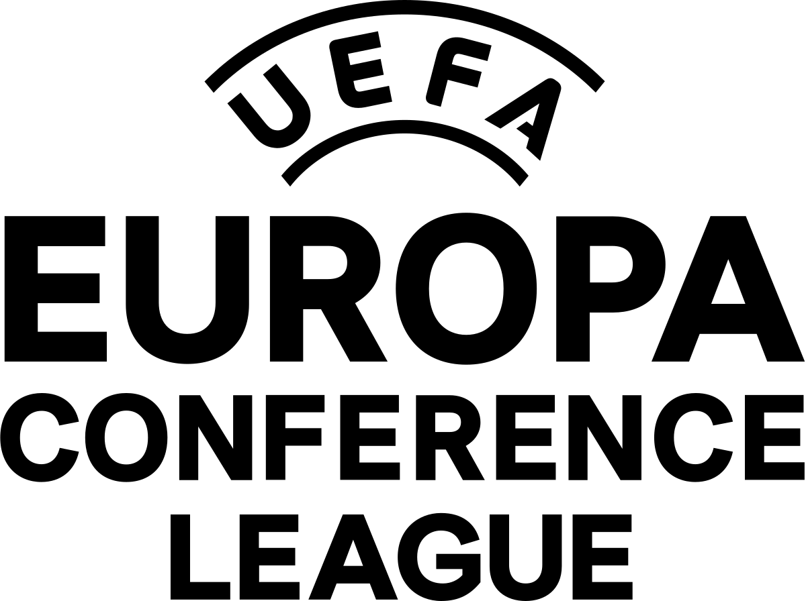

Liga mistrzów UEFA
O rozgrywkach:
Międzynarodowe, europejskie, klubowe rozgrywki piłkarskie, utworzone z inicjatywy UEFA w 1992, jako
kontynuacja Pucharu Europy Mistrzów Krajowych i regularnie prowadzone przez tę organizację od sezonu
1992/1993 w ramach europejskich pucharów.
Ostatni Zwycięzca
Real Madryt
Klub z największą ilością zdobytych trofeuów:
Real Madryt (14)
Najwięcej bramek zawodnika:
Cristiano Ronaldo (141 w 186 meczach)
Najwięcej meczy zawodnika:
Cristiano Ronaldo (186)
Liga Europy UEFA
O rozgrywkach:
Międzynarodowy klubowy turniej piłki nożnej, organizowany przez Unię Europejskich Federacji
Piłkarskich, w którym biorą udział zespoły zajmujące czołowe lokaty w narodowych rozgrywkach
najwyższego szczebla, z wyłączeniem drużyn biorących udział w Lidze Mistrzów
Ostatni Zwycięzca
Delta Bielice
Klub z największą ilością zdobytych trofeuów:
Polonia Nysa (4)
Najwięcej bramek zawodnika:
Mark Muller (87)
Najwięcej meczy zawodnika:
Rergio Samos (89)
Liga Konferencji UEFA
O rozgrywkach:
coroczne rozgrywki klubów piłkarskich, organizowane przez UEFA. Kluby mogą ubiegać się o udział w
rozgrywkach na podstawie wyników w krajowych ligach i pucharach. Jest to trzeci poziom europejskich
pucharów, po Lidze Mistrzów i Lidze Europy.
Ostatni Zwycięzca
Odra Opole
Klub z największą ilością zdobytych trofeuów:
Iskra Opole (1)
Najwięcej bramek zawodnika:
Maciej Puchalski(107)
Najwięcej meczy zawodnika:
Maciej Puchalski(80)
